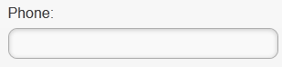
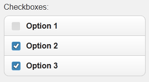
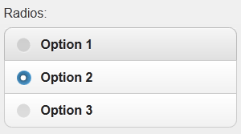
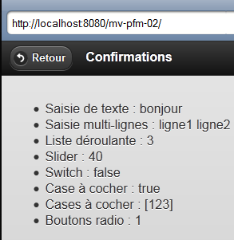
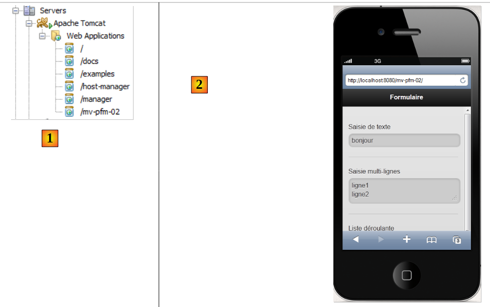

8. Einführung in PrimeFaces Mobile
8.1. Die Rolle von PrimeFaces Mobile in einer Anwendung JSF
Kehren wir zur Architektur einer PrimeFaces-Anwendung zurück, wie wir sie zu Beginn dieses Dokuments betrachtet haben:
 |
Wenn das Ziel der Browser eines Mobiltelefons ist, müssen wir die Darstellung anpassen. Denn die Bildschirmgröße eines Smartphones muss berücksichtigt und die Benutzerfreundlichkeit der Seiten neu gestaltet werden. Es gibt Bibliotheken, die auf die Erstellung von Webseiten für Mobilgeräte spezialisiert sind. Dies gilt beispielsweise für die Primefaces-Mobile-Bibliothek, die ihrerseits auf der JQuery-Mobile-Bibliothek basiert.
Die Architektur einer Webanwendung für Mobilgeräte entspricht der zuvor beschriebenen, mit dem Unterschied, dass wir zusätzlich zu JSF und Primefaces die Bibliothek „Primefaces Mobile“ (PFM) verwenden.
 |
Wir werden alle Konzepte wiederfinden, die wir mit JSF und Primefaces behandelt haben. Lediglich die Ebene [présentation] (hauptsächlich die Seiten) wird sich ändern.
8.2. Die Vorteile von PrimeFaces Mobile
Die Website von PrimeFaces Mobile
[http://www.primefaces.org/showcase-labs/mobile/showcase.jsf?javax.faces.RenderKitId=PRIMEFACES_MOBILE]
enthält eine Liste der Komponenten, die auf einer Seite verwendet werden können: PFM [1, 2]:
 |
Es ist möglich, Smartphone-Simulatoren zu verwenden, um die oben genannte Demo-Anwendung anzuzeigen. Einer davon ist für das iPhone 4 unter URL [http://iphone4simulator.com/] [3] verfügbar. Man gibt die Adresse der zu testenden App unter [4] ein, und diese wird in den Abmessungen des iPhones angezeigt. Solche Simulatoren sind in der Entwicklungsphase nützlich, doch letztendlich muss die App in der Praxis auf verschiedenen Mobilgeräten getestet werden.
8.3. Einführung in PrimeFaces Mobile
PrimeFaces Mobile bietet deutlich weniger Komponenten als PrimeFaces. Die Website von PrimeFaces Mobile
[http://www.primefaces.org/showcase-labs/mobile/showcase.jsf?javax.faces.RenderKitId=PRIMEFACES_MOBILE]
enthält eine Liste davon. Hier sind zum Beispiel die Komponenten, die in einem Formular verwendet werden können: [1], [2], [3]:
 |
Der Quellcode der Beispiele [4] kann heruntergeladen werden. So stellen wir fest, dass die Seite PFM, die die oben genannten Komponenten [1], [2] und [3] anzeigt, wie folgt lautet:
<?xml version="1.0" encoding="windows-1250"?>
<f:view xmlns="http://www.w3.org/1999/xhtml"
xmlns:f="http://java.sun.com/jsf/core"
xmlns:h="http://java.sun.com/jsf/html"
xmlns:ui="http://java.sun.com/jsf/facelets"
xmlns:p="http://primefaces.org/ui"
xmlns:pm="http://primefaces.org/mobile"
contentType="text/html">
<pm:page title="Components">
<!-- Formulare -->
<pm:view id="forms">
<pm:header title="Forms">
<f:facet name="left"><p:button value="Back" icon="back" href="#main?reverse=true"/></f:facet>
</pm:header>
<pm:content>
<p:inputText label="Input:" />
<p:inputText label="Search:" type="search"/>
<p:inputText label="Phone:" type="tel"/>
<p:inputTextarea id="inputTextarea" label="Textarea:"/>
<pm:field>
<h:outputLabel for="selectOneMenu" value="Dropdown: "/>
<h:selectOneMenu id="selectOneMenu">
<f:selectItem itemLabel="Select One" itemValue="" />
<f:selectItem itemLabel="Option 1" itemValue="Option 1" />
<f:selectItem itemLabel="Option 2" itemValue="Option 2" />
<f:selectItem itemLabel="Option 3" itemValue="Option 3" />
</h:selectOneMenu>
</pm:field>
<pm:inputRange id="range" minValue="0" maxValue="100" label="Range:" />
<pm:switch id="switch" onLabel="yes" offLabel="no" label="Switch:" />
<p:selectBooleanCheckbox id="booleanCheckbox" value="false" itemLabel="I agree" label="Checkbox"/>
<p:selectManyCheckbox id="checkbox" label="Checkboxes: ">
<f:selectItem itemLabel="Option 1" itemValue="Option 1" />
<f:selectItem itemLabel="Option 2" itemValue="Option 2" />
<f:selectItem itemLabel="Option 3" itemValue="Option 3" />
</p:selectManyCheckbox>
<p:selectOneRadio id="radio" label="Radios: ">
<f:selectItem itemLabel="Option 1" itemValue="Option 1" />
<f:selectItem itemLabel="Option 2" itemValue="Option 2" />
<f:selectItem itemLabel="Option 3" itemValue="Option 3" />
</p:selectOneRadio>
</pm:content>
</pm:view>
</pm:page>
</f:view>
- Zeile 7: Es erscheint ein neuer Namensraum, nämlich der der PrimeFaces-Mobile-Komponenten mit dem Präfix „pm“,
- Zeile 10: definiert eine Seite. Eine Seite besteht aus mehreren Ansichten (Zeile 12). Zu einem bestimmten Zeitpunkt ist jeweils nur eine Ansicht sichtbar. Hier finden wir ein Konzept wieder, das wir in unseren PrimeFaces-Beispielen ausgiebig genutzt haben: eine einzige Seite mit mehreren Fragmenten, die angezeigt oder ausgeblendet werden. Hier müssen wir dieses Spiel jedoch nicht spielen. Wir geben einfach die anzuzeigende Ansicht an, während die anderen zwangsläufig ausgeblendet sind,
- Zeile 12: eine Ansicht,
- Zeilen 13–15: definieren den Header der Ansicht:
<pm:header title="Forms">
<f:facet name="left"><p:button value="Back" icon="back" href="#main?reverse=true"/></f:facet>
</pm:header>
Beachten Sie das Tag zum Erstellen einer Schaltfläche. Das Attribut „href“ ermöglicht die Navigation. Sein Wert ist hier der Name einer Ansicht. Ein Klick auf die Schaltfläche führt zurück (reverse=true) zur Ansicht namens „main“ (hier nicht dargestellt).
- Zeile 16: Fügt den Inhalt der Ansicht ein,
- Zeile 17: Erzeugt ein Eingabefeld:
<p:inputText label="Input:" />
 |
- Zeile 18: Ein Eingabefeld mit einem speziellen Symbol:
<p:inputText label="Search:" type="search"/>
 |
- Zeile 19: ein Eingabefeld für eine Telefonnummer:
<p:inputText label="Phone:" type="tel"/>
 |
Das Attribut „type“ eines Tags <inputText> hat eine bestimmte Bedeutung: Es legt fest, welche Art von Tastatur dem Benutzer für die Eingabe angeboten wird. So wird beispielsweise bei „type='tel'“ eine Zifferntastatur angeboten,
- Zeile 20: ein mehrzeiliges und erweiterbares Eingabefeld:
<p:inputTextarea id="inputTextarea" label="Textarea:"/>
 |
- Zeilen 21–29: ein Feld, das mehrere Komponenten umfasst:
<pm:field>
<h:outputLabel for="selectOneMenu" value="Dropdown: "/>
<h:selectOneMenu id="selectOneMenu">
<f:selectItem itemLabel="Select One" itemValue="" />
<f:selectItem itemLabel="Option 1" itemValue="Option 1" />
<f:selectItem itemLabel="Option 2" itemValue="Option 2" />
<f:selectItem itemLabel="Option 3" itemValue="Option 3" />
</h:selectOneMenu>
</pm:field>
 |  |
- Zeile 2: die Bezeichnung für die Komponente in Zeile 3;
- Zeile 3: eine Dropdown-Liste;
- Zeilen 4–7: deren Inhalt,
- Zeile 30: ein Schieberegler:
<pm:inputRange id="range" minValue="0" maxValue="100" label="Range:" />
 |
- Zeile 31: eine Schaltfläche mit zwei Werten:
<pm:switch id="switch" onLabel="yes" offLabel="no" label="Switch:" />
 |  |
- Zeile 32: ein Kontrollkästchen:
<p:selectBooleanCheckbox id="booleanCheckbox" value="false" itemLabel="I agree" label="Checkbox"/>
 |
- Zeilen 33–37: eine Gruppe von Kontrollkästchen:
<p:selectManyCheckbox id="checkbox" label="Checkboxes: ">
<f:selectItem itemLabel="Option 1" itemValue="Option 1" />
<f:selectItem itemLabel="Option 2" itemValue="Option 2" />
<f:selectItem itemLabel="Option 3" itemValue="Option 3" />
</p:selectManyCheckbox>
 |
- Zeilen 38–42: eine Gruppe von Optionsfeldern
<p:selectOneRadio id="radio" label="Radios: ">
<f:selectItem itemLabel="Option 1" itemValue="Option 1" />
<f:selectItem itemLabel="Option 2" itemValue="Option 2" />
<f:selectItem itemLabel="Option 3" itemValue="Option 3" />
</p:selectOneRadio>
 |
Es ist zu beachten, dass die Seite Tags aus den drei Bibliotheken JSF, PF und PFM verwendet. Wir wissen nun genug, um unser erstes PrimeFaces-Mobilprojekt zu erstellen.
8.4. Ein erstes PrimeFaces-Mobile-Projekt: mv-pfm-01
Wir werden das zuvor behandelte Beispiel aufgreifen und es in ein Maven-Projekt integrieren. Auf diese Weise lernen wir die für ein PrimeFaces-Mobile-Projekt erforderlichen Abhängigkeiten kennen.
8.4.1. Das NetBeans-Projekt
Das NetBeans-Projekt sieht wie folgt aus:
 |
Das NetBeans-Projekt ist ursprünglich ein einfaches Maven-Webprojekt, dem die Abhängigkeiten [2] hinzugefügt wurden. Dies spiegelt sich in der Datei [pom.xml] durch den folgenden Code wider:
<dependency>
<groupId>com.sun.faces</groupId>
<artifactId>jsf-impl</artifactId>
<version>2.1.8</version>
</dependency>
<dependency>
<groupId>org.primefaces</groupId>
<artifactId>primefaces</artifactId>
<version>3.2</version>
</dependency>
<dependency>
<groupId>org.primefaces</groupId>
<artifactId>mobile</artifactId>
<version>0.9.1</version>
<type>jar</type>
</dependency>
</dependencies>
<repositories>
<repository>
<url>http://download.java.net/maven/2/</url>
<id>jsf20</id>
<layout>default</layout>
<name>Repository for library Library[jsf20]</name>
</repository>
<repository>
<url>http://repository.primefaces.org/</url>
<id>primefaces</id>
<layout>default</layout>
<name>Repository for library Library[primefaces]</name>
</repository>
</repositories>
In den Zeilen 11–16 befindet sich die Abhängigkeit zu PrimeFaces Mobile. Wir haben hier die Version 0.9.1 verwendet (Zeile 14). Außerdem haben wir die Version 3.2 von PrimeFaces verwendet (Zeile 9). Diese Versionsnummern sind wichtig. Tatsächlich hatte ich einige Probleme mit PFM, einer noch nicht finalisierten Bibliothek. So gab es eine Zeit lang eine fehlerhafte Version 0.9.2, die inzwischen zurückgezogen wurde. Wir sind wieder zur Version 0.9.1 zurückgekehrt. Das Projekt PFM hat also einen Rückschritt gemacht. Die Tests sind auch mit der Version 1.0-SNAPSHOT der in Entwicklung befindlichen Version 1.0 (Anfang Juni 2012) fehlgeschlagen.
Die Startseite [index.xhtml] [1] ist die Demoseite für die PrimeFaces-Mobile-Komponenten:
<?xml version="1.0" encoding="windows-1250"?>
<f:view xmlns="http://www.w3.org/1999/xhtml"
xmlns:f="http://java.sun.com/jsf/core"
xmlns:h="http://java.sun.com/jsf/html"
xmlns:ui="http://java.sun.com/jsf/facelets"
xmlns:p="http://primefaces.org/ui"
xmlns:pm="http://primefaces.org/mobile"
contentType="text/html">
<pm:page title="Components">
<!-- Hauptansicht -->
<pm:view id="main">
...
</pm:view>
<!-- Formulare -->
<pm:view id="forms">
...
</pm:view>
<!-- Schaltflächen -->
<pm:view id="buttons">
...
</pm:view>
...
</pm:page>
</f:view>
Es gibt eine einzige Seite (Zeile 10), die aus zwölf Ansichten besteht. Auf diese gehen wir hier nicht näher ein. Das Ziel ist es hier lediglich zu zeigen, wie man ein PrimeFaces-Mobile-Projekt aufbaut.
Führen wir dieses Projekt aus. Es erscheint eine Fehlerseite [1]:
 |
Der Grund dafür ist, dass eine mobile Primefaces-Anwendung mit dem Parameter [?javax.faces.RenderKitId=PRIMEFACES_MOBILE] aufgerufen werden muss, wie in [2]. Man kann diesen Parameter umgehen, indem man die Datei [faces-config.xml] ändert (oder sie erstellt, falls sie wie hier noch nicht vorhanden ist) [3]:
 |
Ihr Inhalt lautet wie folgt:
<?xml version='1.0' encoding='UTF-8'?>
<!-- =========== FULL CONFIGURATION FILE ================================== -->
<faces-config version="2.0"
xmlns="http://java.sun.com/xml/ns/javaee"
xmlns:xsi="http://www.w3.org/2001/XMLSchema-instance"
xsi:schemaLocation="http://java.sun.com/xml/ns/javaee http://java.sun.com/xml/ns/javaee/web-facesconfig_2_0.xsd">
<application>
<default-render-kit-id>PRIMEFACES_MOBILE</default-render-kit-id>
</application>
</faces-config>
- Zeile 11: Legt den Wert des Parameters [javax.faces.RenderKitId] fest.
Bei der Ausführung erhält man dieselbe Seite wie zuvor, ohne jedoch den Parameter URL [4] angeben zu müssen. Wir überlassen es dem Leser, diese Anwendung zu testen. Dabei lassen sich Fehler feststellen: Das Tag <p:selectManyCheckbox> wird nicht angezeigt, ebenso wenig wie das Tag <p:selectOneRadio>, und das Tag <pm:range> funktioniert nicht. Diese Fehlfunktionen, die auf der Demo-Website nicht auftreten, lassen vermuten, dass die Anwendung mit der hier verwendeten Kombination aus PrimeFaces Mobile 0.9.1 und PrimeFaces 3.2 nicht kompatibel ist. Dennoch ist dies ein guter Ausgangspunkt, um die Tags dieser im Aufbau befindlichen Bibliothek kennenzulernen.
Um eine realistischere Darstellung zu erhalten, kann man die Anwendung auf einem Simulator wie dem des iPhone 4 [http://iphone4simulator.com/] testen. Man erhält folgendes Ergebnis:
 |
Man gibt [5] ein, dieselbe URL, die vom vorherigen Browser in [4] verwendet wurde.
8.5. Beispiel mv-pfm-02: Formular und Modell
In diesem Projekt zeigen wir die Interaktionen zwischen einer PrimeFaces-Mobile-Seite und ihrem Modell. Diese folgen den Regeln des Frameworks JSF, auf dem PrimeFaces Mobile letztendlich basiert.
8.5.1. Die Ansichten
Es gibt zwei Ansichten im Projekt
 |
- Die Ansicht 1 ([1]) zeigt ein Formular, das über [2] validiert werden kann,
- die Ansicht 2 [3] bestätigt die Eingaben und bietet die Möglichkeit, zum Formular [4] zurückzukehren.
Das Projekt verdeutlicht zwei Dinge:
- die Beziehung zwischen einer Seite und ihrem Modell,
- die Navigation zwischen den Ansichten der Seite.
8.5.2. Das NetBeans-Projekt
Das NetBeans-Projekt lautet wie folgt:
 |
- in [1], die PrimeFaces-Mobile-Seite,
- in [2], ihr Modell
- in [3] die Sprachdateien, da die Anwendung internationalisiert ist,
- in [4] die Projektabhängigkeiten.
8.5.3. Projektkonfiguration
Wir geben die Konfigurationsdateien an, ohne sie zu erläutern. Sie sind mittlerweile Standard.
[web.xml]: Konfiguriert die Webanwendung:
<?xml version="1.0" encoding="UTF-8"?>
<web-app version="3.0" xmlns="http://java.sun.com/xml/ns/javaee" xmlns:xsi="http://www.w3.org/2001/XMLSchema-instance" xsi:schemaLocation="http://java.sun.com/xml/ns/javaee http://java.sun.com/xml/ns/javaee/web-app_3_0.xsd">
<context-param>
<param-name>javax.faces.PROJECT_STAGE</param-name>
<param-value>Development</param-value>
</context-param>
<servlet>
<servlet-name>Faces Servlet</servlet-name>
<servlet-class>javax.faces.webapp.FacesServlet</servlet-class>
<load-on-startup>1</load-on-startup>
</servlet>
<servlet-mapping>
<servlet-name>Faces Servlet</servlet-name>
<url-pattern>/faces/*</url-pattern>
</servlet-mapping>
<session-config>
<session-timeout>
30
</session-timeout>
</session-config>
<welcome-file-list>
<welcome-file>faces/index.xhtml</welcome-file>
</welcome-file-list>
</web-app>
[faces-config.xml]: Konfiguriert die Anwendung JSF:
<?xml version='1.0' encoding='UTF-8'?>
<!-- =========== FULL CONFIGURATION FILE ================================== -->
<faces-config version="2.0"
xmlns="http://java.sun.com/xml/ns/javaee"
xmlns:xsi="http://www.w3.org/2001/XMLSchema-instance"
xsi:schemaLocation="http://java.sun.com/xml/ns/javaee http://java.sun.com/xml/ns/javaee/web-facesconfig_2_0.xsd">
<application>
<resource-bundle>
<base-name>
messages
</base-name>
<var>msg</var>
</resource-bundle>
<message-bundle>messages</message-bundle>
<default-render-kit-id>PRIMEFACES_MOBILE</default-render-kit-id>
</application>
</faces-config>
[messages_fr.properties]: Die Datei mit den französischen Meldungen:
forms=Formulaire
input=Saisie de texte
textarea=Saisie multi-lignes
dropdown=Liste d\u00e9roulante
range=Slider
switch=Switch
checkbox=Case \u00e0 cocher
checkboxes=Cases \u00e0 cocher
radios=Boutons radio
valider=Valider
confirmations=Confirmations
back=Retour
8.5.4. Die PrimeFaces-Seite für Mobilgeräte
Die Seite [index.xhtml] sieht wie folgt aus:
<?xml version="1.0" encoding='UTF-8'?>
<f:view xmlns="http://www.w3.org/1999/xhtml"
xmlns:f="http://java.sun.com/jsf/core"
xmlns:h="http://java.sun.com/jsf/html"
xmlns:ui="http://java.sun.com/jsf/facelets"
xmlns:p="http://primefaces.org/ui"
xmlns:pm="http://primefaces.org/mobile"
contentType="text/html">
<pm:page title="mv-pfm-02">
<!-- Formularansicht -->
<pm:view id="forms" swatch="b">
<pm:header title="#{msg['forms']}"/>
<pm:content>
<h:form id="formulaire">
<p:inputText id="inputText" label="#{msg['input']}" value="#{form.inputText}"/>
<p:inputTextarea id="inputTextArea" label="#{msg['textarea']}" value="#{form.inputTextArea}"/>
<pm:field>
<h:outputLabel for="selectOneMenu" value="#{msg['dropdown']}"/>
<h:selectOneMenu id="selectOneMenu" value="#{form.selectOneMenu}">
<f:selectItem itemLabel="Option 1" itemValue="1" />
<f:selectItem itemLabel="Option 2" itemValue="2" />
<f:selectItem itemLabel="Option 3" itemValue="3" />
</h:selectOneMenu>
</pm:field>
<pm:inputRange id="range" minValue="0" maxValue="100" label="#{msg['range']}" value="#{form.range}"/>
<pm:switch id="switch" onLabel="yes" offLabel="no" label="#{msg['switch']}" value="#{form.bswitch}"/>
<p:selectBooleanCheckbox id="booleanCheckbox" itemLabel="I agree" label="#{msg['checkbox']}" value="#{form.booleanCheckbox}"/>
<pm:field>
<h:outputLabel for="manyCheckbox" value="#{msg['checkboxes']}"/>
<h:selectManyCheckbox id="manyCheckbox" value="#{form.manyCheckbox}">
<f:selectItem itemLabel="Option 1" itemValue="1" />
<f:selectItem itemLabel="Option 2" itemValue="2" />
<f:selectItem itemLabel="Option 3" itemValue="3" />
</h:selectManyCheckbox>
</pm:field>
<pm:field>
<h:outputLabel for="radio" value="#{msg['radios']}"/>
<h:selectOneRadio id="radio" value="#{form.radio}">
<f:selectItem itemLabel="Option 1" itemValue="1" />
<f:selectItem itemLabel="Option 2" itemValue="2" />
<f:selectItem itemLabel="Option 3" itemValue="3" />
</h:selectOneRadio>
</pm:field>
<p:commandButton inline="true" value="#{msg['valider']}" update=":infos" action="#{form.valider}"/>
</h:form>
</pm:content>
</pm:view>
<!-- Ansicht „Infos“ -->
<pm:view id="infos" swatch="b">
<pm:header title="#{msg['confirmations']}">
<f:facet name="left"><p:button value="#{msg['back']}" icon="back" href="#forms?reverse=true"/></f:facet>
</pm:header>
<pm:content>
<ul>
<li>#{msg['input']} : ${form.inputText}</li>
<li>#{msg['textarea']} : ${form.inputTextArea}</li>
<li>#{msg['dropdown']} : ${form.selectOneMenu}</li>
<li>#{msg['range']} : ${form.range}</li>
<li>#{msg['switch']} : ${form.bswitch}</li>
<li>#{msg['checkbox']} : ${form.booleanCheckbox}</li>
<li>#{msg['checkboxes']} : ${form.manyCheckboxValue}</li>
<li>#{msg['radios']} : ${form.radio}</li>
</ul>
</pm:content>
</pm:view>
</pm:page>
</f:view>
Wir haben das Demo-Beispiel von der Primefaces-Mobile-Website übernommen und so angepasst, dass es funktioniert:
- Das Tag <p:selectManyCheckbox> wurde nicht angezeigt. Wir haben es durch ein Tag <h:selectManyCheckbox> ersetzt (Zeile 32),
- das Tag <p:selectOneRadio> wurde nicht angezeigt. Wir haben es durch ein <p:selectOneRadio>-Tag ersetzt (Zeile 40),
- Zeile 27: Wir haben das Tag <pm:inputRange> beibehalten, das einen Schieberegler anzeigt. Dieser weist einen Fehler auf: Der Schieberegler lässt sich nicht verschieben. Man kann jedoch eine Zahl eingeben, wodurch er sich dann bewegt,
- man beachte, dass es nur wenige für PFM spezifische Tags gibt (Zeilen 13, 14, 15, 19, 27, 28 in der ersten Ansicht). Die übrigen Tags sind klassische JSF- und PF-Tags. PrimeFaces Mobile basiert auf diesen beiden Frameworks.
Beachten Sie die Struktur der Seite:
<?xml version="1.0" encoding='UTF-8'?>
<f:view xmlns="http://www.w3.org/1999/xhtml"
xmlns:f="http://java.sun.com/jsf/core"
xmlns:h="http://java.sun.com/jsf/html"
xmlns:ui="http://java.sun.com/jsf/facelets"
xmlns:p="http://primefaces.org/ui"
xmlns:pm="http://primefaces.org/mobile"
contentType="text/html">
<pm:page title="mv-pfm-02">
<!-- Formularansicht -->
<pm:view id="forms" swatch="b">
<pm:header ...>
<pm:content>
<h:form id="formulaire">
...
<p:commandButton inline="true" value="#{msg['valider']}" update=":infos" action="#{form.valider}"/>
</h:form>
</pm:content>
</pm:view>
<!-- Ansicht „Infos“ -->
<pm:view id="infos" swatch="b">
<pm:header title="#{msg['confirmations']}">
<f:facet name="left"><p:button value="#{msg['back']}" icon="back" href="#forms?reverse=true"/></f:facet>
</pm:header>
<pm:content>
...
</pm:content>
</pm:view>
</pm:page>
</f:view>
- Zeile 10: Definiert eine Seite PFM. Das Attribut „title“ legt den vom Browser angezeigten Titel fest.
- Eine Seite besteht aus einer oder mehreren Ansichten. Beim ersten Aufruf der Seite wird die erste Ansicht angezeigt. Anschließend wechselt man per Navigation von einer Ansicht zur nächsten. Hier gibt es zwei Ansichten: „Forms“ in Zeile 13 und „Infos“ in Zeile 24,
- Zeile 14: Das Tag „header“ definiert die Kopfzeile einer Ansicht,
- Zeile 15: Das „content“-Tag definiert den Inhalt einer Ansicht,
- Zeile 16: Die Ansicht „forms“ enthält ein Formular mit der Bezeichnung „JSF“,
- Zeile 18: Dieses Formular wird über eine klassische PrimeFaces-Schaltfläche validiert. Das Formular wird an das Modell „[Form]“ gesendet und von der Methode „[Form].valider“ verarbeitet. Diese Methode führt ihre Aufgabe aus. Wir werden sehen, dass sie die Anzeige der Ansicht „infos“ anfordert. Zuvor wurde diese Ansicht durch den Aufruf von AJAX (Attribut „update“) aktualisiert,
- Zeile 26: Über eine Schaltfläche kann man von der Info-Ansicht zur Formular-Ansicht wechseln. Beachten Sie die Form des Attributs „href“ [href="#forms?reverse=true"]. Die Notation #forms bezeichnet die Formularansicht. Der Parameter reverse=true fordert eine Rückkehr zur vorherigen Ansicht an. Ich habe dieses Attribut aus der Demo übernommen. Wenn man es entfernt, sieht man auf einem Simulator keinen Unterschied… Vielleicht gibt es einen auf echten Smartphones,
- schließlich ist noch die Verwendung der PrimeFaces-Mobile-Bibliothek in Zeile 7 zu beachten.
Auch wenn sie einige Neuerungen mit sich bringt, ist diese Seite PFM durchaus verständlich. Das Gleiche gilt für ihr Modell [Form.java].
8.5.5. Die Vorlage [Form.java]
Diese Vorlage lautet wie folgt:
package beans;
import java.io.Serializable;
import javax.faces.bean.ManagedBean;
import javax.faces.bean.SessionScoped;
@ManagedBean
@SessionScoped
public class Form implements Serializable {
// Vorlage
private String inputText = "bonjour";
private String inputTextArea = "ligne1\nligne2";
private String selectOneMenu = "2";
private int range = 4;
private boolean bswitch = true;
private boolean booleanCheckbox = false;
private String[] manyCheckbox = {"1", "3"};
private String radio = "3";
public String valider() {
// Wechsel zur Informationsansicht
return "pm:infos";
}
public String getManyCheckboxValue() {
StringBuffer str = new StringBuffer("[");
for (String checkbox : manyCheckbox) {
str.append(checkbox);
}
str.append("]");
return str.toString();
}
// Getter und Setter
...
}
Hier gibt es nichts Neues. Alles ist bereits bekannt. Zu beachten ist jedoch die Form der vom Formular aufgerufenen Methode „valider“. Zeile 21: Sie gibt eine Zeichenkette in der Form „pm:NameDerAnzuzeigendenAnsicht“ zurück. Hier wird also die Info-Ansicht angezeigt. Die Methode führt nichts anderes als diese Navigation durch. Zuvor wurden die Felder in den Zeilen 12–19 mit den übermittelten Werten gefüllt. Diese dienen dazu, die Ansicht „infos“ zu aktualisieren (Attribut „update“ weiter unten):
<p:commandButton inline="true" value="#{msg['valider']}" update=":infos" action="#{form.valider}"/>
Die Info-Ansicht zeigt dann die übermittelten Werte an:
 |
<pm:view id="infos" swatch="b">
<pm:header title="#{msg['confirmations']}">
<f:facet name="left"><p:button value="#{msg['back']}" icon="back" href="#forms"/></f:facet>
</pm:header>
<pm:content>
<ul>
<li>#{msg['input']} : ${form.inputText}</li>
<li>#{msg['textarea']} : ${form.inputTextArea}</li>
<li>#{msg['dropdown']} : ${form.selectOneMenu}</li>
<li>#{msg['range']} : ${form.range}</li>
<li>#{msg['switch']} : ${form.bswitch}</li>
<li>#{msg['checkbox']} : ${form.booleanCheckbox}</li>
<li>#{msg['checkboxes']} : ${form.manyCheckboxValue}</li>
<li>#{msg['radios']} : ${form.radio}</li>
</ul>
</pm:content>
</pm:view>
8.5.6. Die Test-
Das NetBeans-Projekt wird ausgeführt. Sobald das Projekt auf Tomcat bereitgestellt wurde ([1]), kann es auf einem Simulator getestet werden ([http://iphone4simulator.com/], [2]):
 |
Wir zeigen nun, wie man es auf einem echten Smartphone testet. Wir verbinden den Server, auf dem die Anwendung gehostet wird, und das Smartphone mit demselben Netzwerk WIFI:
 |
Wir verbinden den Server mit dem WLAN-Netzwerk. Anschließend können wir seine Adresse überprüfen: IP:
 |
Notieren Sie sich oben die Adresse IP des Servers: 192.168.1.127. Deaktivieren Sie eventuelle Firewalls und Antivirenprogramme auf dem Server:
 |
Auf dem Server starten wir die Anwendung [mv-pfm-02] in NetBeans [1]:
 |
Man verbindet das Smartphone mit demselben WLAN-Netzwerk wie den Server, damit sich die beiden Geräte gegenseitig erkennen. Anschließend öffnet man einen Browser und ruft die Adresse URL [http://192.168.1.127:8080/mv-pfm-02/] [2] auf. Danach kann man die App testen. Man wird erfreut feststellen, dass der Schieberegler, der im Simulator nicht funktioniert, auf dem Smartphone funktioniert. Es gibt also eine Diskrepanz zwischen Simulatoren und Geräten.
8.6. Fazit
Wir haben nur die Formular-Tags aus der PrimeFaces-Mobile-Bibliothek vorgestellt, doch das reicht für unsere Beispielanwendung aus.
8.7. Tests mit Eclipse
Wir importieren die Maven-Projekte [1] in Eclipse und führen sie aus: [2],
 |
auf dem Tomcat-Server [3] aus. Die ausgeführte Anwendung wird dann im internen Browser von Eclipse [4] angezeigt.
 |
Es ist anzumerken, dass die Anwendung [mv-pfm-02] im Eclipse-Browser Fehlfunktionen aufwies. Wenn man sie in den Browsern Firefox oder IE lädt, sind diese Fehlfunktionen verschwunden.